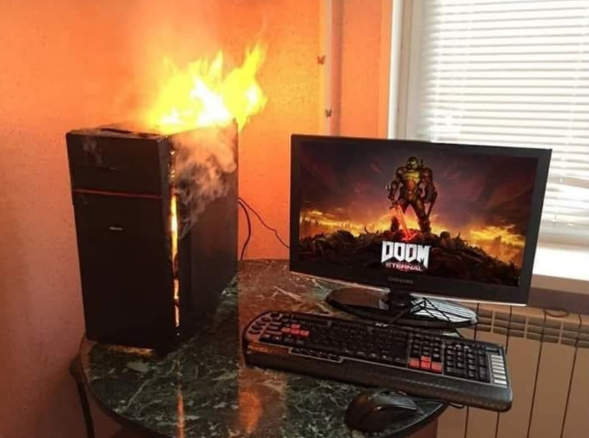
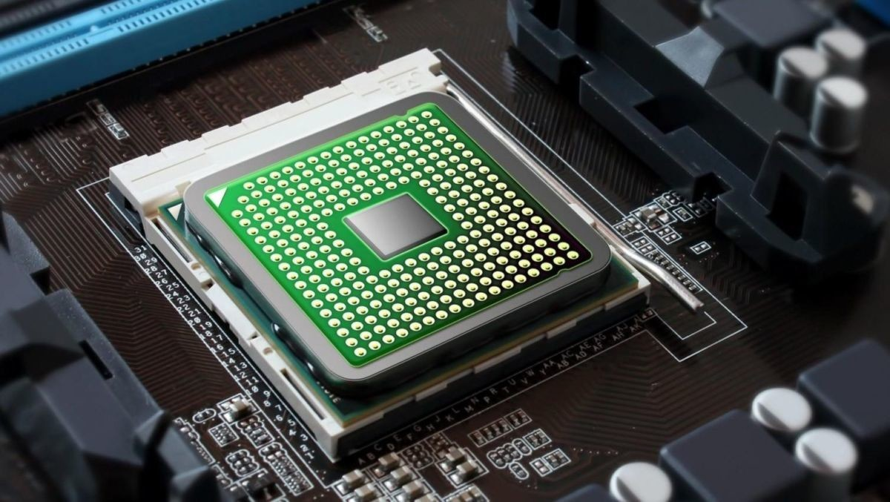
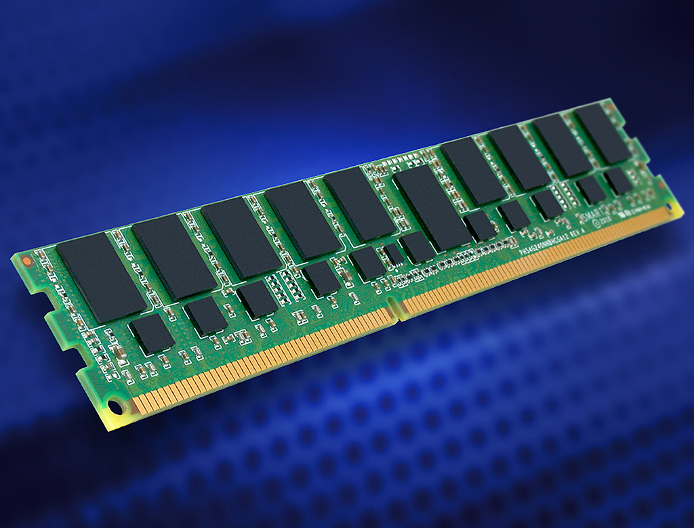
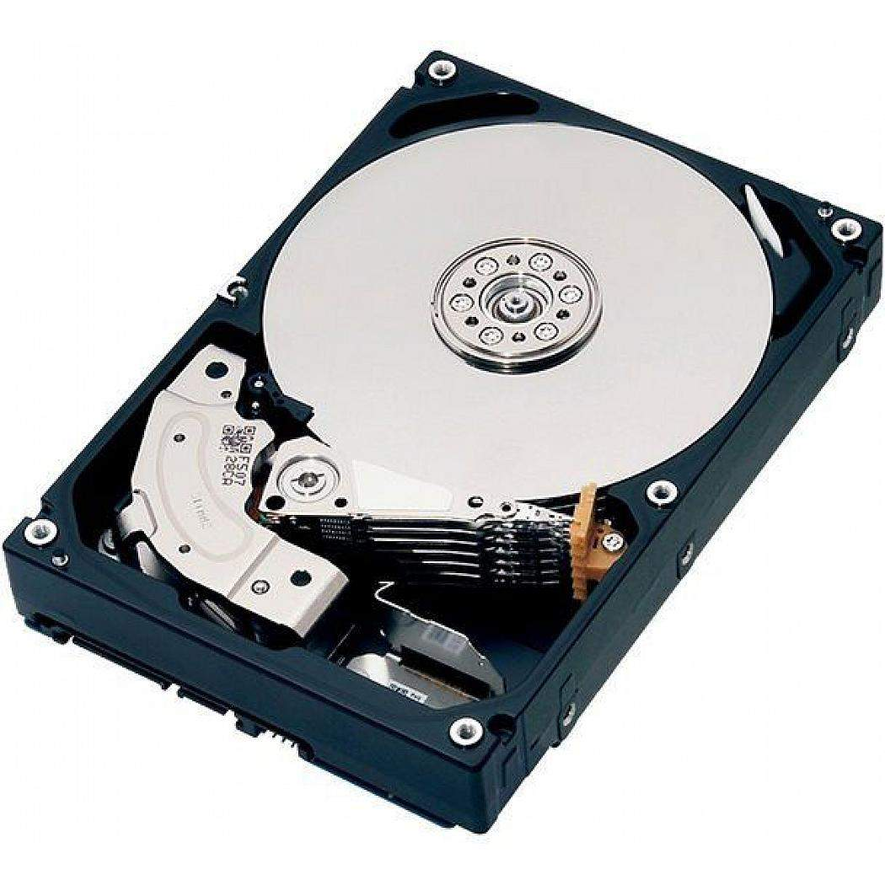
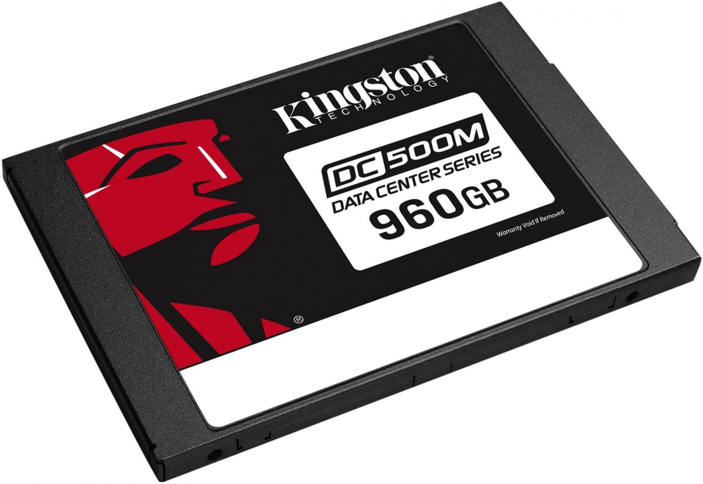

Компы лагают. Иногда сильно. Если "сильно" чаще чем просто "лагает", то, возможно, вам стоит обновить свой пк. Здесь я напишу про некоторые комплектующие, на которые стоит обрать внимание.
ЦП - ядро компютера. Оно проводит все операции. Если у вас стоит ЦП 2005 года, то и компьютер будет 2005 года. Важно обновлять ЦП вовремя. Сайт intel: тык
Слегка менее важный компонент, но всё ещё важный. Он ответственен за кратковременное хранение данных. Сайт Kingston: тык
Это устройство долговременного хранения информации. На данный момент HDD стремительно устаревает, и ему на смену приходит твердотельный накопитель.
Это устройство долговременного хранения информации. SSD - относительно новая технология, стремительно набирающая популярность. Сайт Kingston: тык
